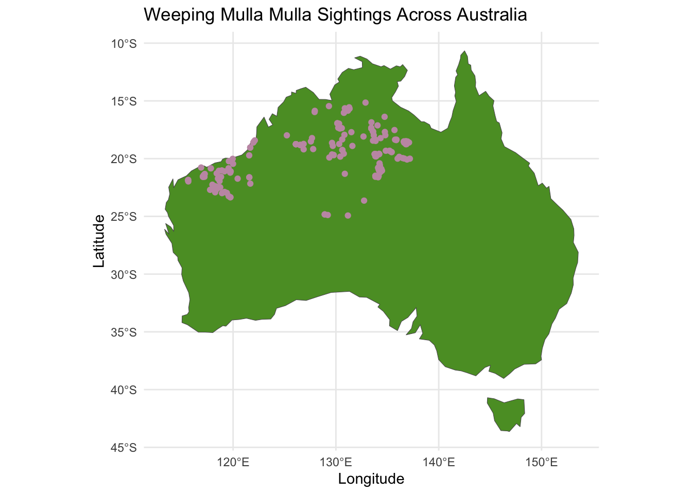
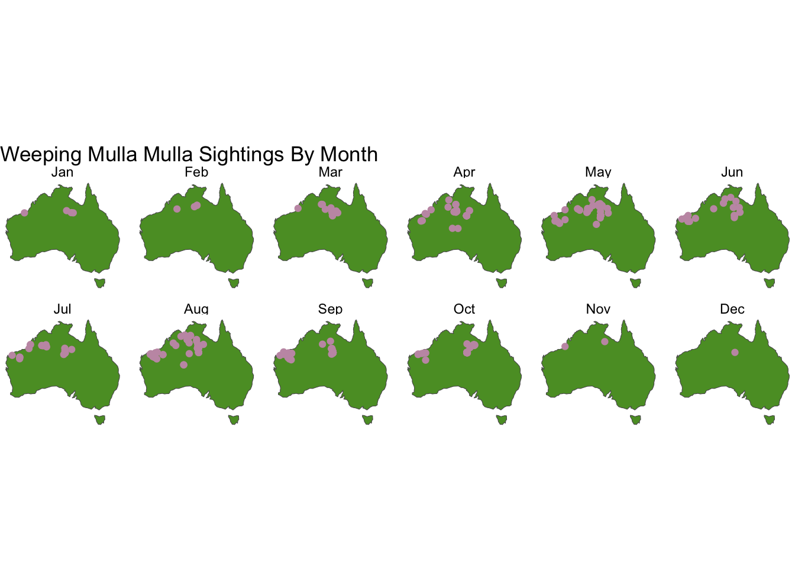

library(kableExtra)
library(galah)
library(spData)
library(tidyverse)
galah_config(email = "kngu0086@student.monash.edu",
download_reason_id = 10,
verbose = FALSE)
rawdata <- galah_call() %>%
galah_identify("Weeping mulla mulla") %>%
galah_select(
basisOfRecord ,
decimalLatitude,
decimalLongitude,
eventDate,
scientificName,
taxonConceptID,
recordID,
dataResourceName,
eventRemarks,
eventTime,
eventID,
eventDate,
samplingEffort,
samplingProtocol,
group = c("basic", "event")
) %>%
atlas_occurrences() %>%
filter(basisOfRecord == "HUMAN_OBSERVATION")
save(rawdata, file = "data-raw/rawdata.rda")Weeping Mulla Mulla: Ptilotus Calostachyus
Introduction
- We expect the species to thrive in dry conditions, with temperatures ranging from approximately 24 to 34 degrees Celsius (TravelOnline Australia).
- We anticipate that there may have been fewer sightings during the COVID-19 pandemic. Since the data relies on volunteer work, there might have been fewer sightings due to a lack of reporting during this time.
Data description
The data is sourced from the Atlas of Living Australia website, which aggregates multiple data sources and includes variables indicating location, date, time, scientific name, resource names, and species status. There are 356 observations and 14 variables in the raw data set.
For our analysis, we will primarily utilise the location and event time data. However, a comprehensive dictionary is provided below:
| Variable | Description |
|---|---|
| decimalLatitude | Latitude value of sighting in decimal format. |
| decimalLongitude | Longitude value of sighting in decimal format. |
| eventDate | Recorded sighting date and time in the format YYYY-MM-DD, hh:mm:ss. In some cases, no time was recorded, and therefore, it is left as 00:00:00. |
| scientificName | The scientific name of the observed species. |
| taxonConceptID | The taxonomy website ID: Ptilotus calostachyus. |
| recordID | The record ID of each observation. |
| dataResourceName | The data resource associated with the observation: List of 23 partners. |
| occurrenceStatus | The occurrence status: Present. |
| eventRemarks | Any additional remarks or comments related to the observation. |
| eventTime | Time of the event recorded in the format hh:mm:ss, including the time zone difference. |
| eventID | The event ID of each obsercation. |
| samplingEffort | A description of the effort or area that was surveyed or sampled to locate the species. |
| samplingProtocol | The protocol that was used to sample the species. |
| basisOfRecord | Indicates how the record was made: Human observation. |
Initial data analysis
weeping_mulla_mulla <- rawdata %>%
select(decimalLongitude, decimalLatitude, eventDate) %>%
rename(Longitude = decimalLongitude,
Latitude = decimalLatitude) %>%
mutate(
eventDate = as.Date(eventDate),
Year = lubridate::year(eventDate),
Month = lubridate::month(eventDate),
monthName = lubridate::month(eventDate, label = TRUE, abbr = TRUE),
Day = lubridate::day(eventDate)
) %>%
filter(!is.na(eventDate)) %>%
filter(!is.na(Longitude))
save(weeping_mulla_mulla, file = ("data/weeping_mulla_mulla.rda"))library(rnoaa)
aus_stations <- ghcnd_stations() |>
filter(str_starts(id, "ASN")) |>
filter(last_year >= 2020) |>
mutate(wmo_id = as.numeric(wmo_id),
name = str_to_lower(name)) |>
select(-state, -gsn_flag) |>
filter(element %in% c("PRCP", "TMAX", "TMIN")) |>
nest(element: last_year) |>
rowwise() |>
filter(nrow(data) == 3) |>
select(-data) narrogin <- aus_stations |>
filter(id == "ASN00010614") |>
rowwise() |>
mutate(ts = list(meteo_pull_monitors(
monitors = id, var = c("PRCP", "TMAX", "TMIN"),
date_min = "2004-01-01",
date_max = "2023-09-13") |>
select(-id))) |>
rename(lat = latitude, long = longitude, elev = elevation) |> select(id, long, lat, elev, name, wmo_id, ts) %>%
unnest(ts) |>
mutate(tmax = tmax/10, tmin = tmin/ 10)Exploratory data analysis
data(world, package = "spData")
australia <- world[world$iso_a2 == "AU",]
australia_plot <- ggplot(australia) + geom_sf(fill = "#5b9b2e")
combined_plot <- australia_plot +
geom_point(
data = weeping_mulla_mulla,
aes(x = Longitude, y = Latitude),
colour = "#c599b2",
) +
labs(title = "Weeping Mulla Mulla Sightings Across Australia") +
theme_minimal()
combined_plot
combined_plot +
facet_wrap(~monthName, ncol = 6) +
theme_void() +
labs(title = "Weeping Mulla Mulla Sightings By Month") 
Summary
References
- TravelOnline Australia Pty Ltd. Western Australia Weather & Climate. Retrieved September 27, 2023, from https://www.travelonline.com/western-australia/weather
- The Atlas of Living Australia. Ptilotus calostachyus F.Muell.Retrieved September 27, 2023, from https://bie.ala.org.au/species/https://id.biodiversity.org.au/node/apni/2910906#overview